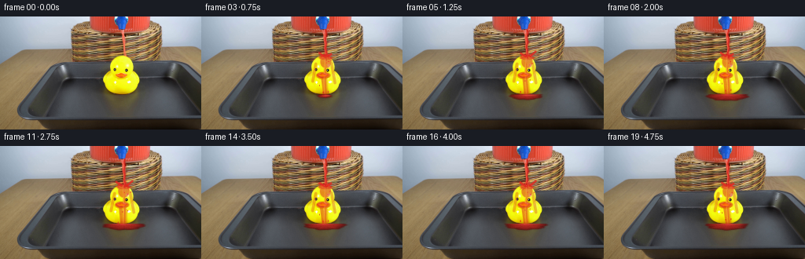
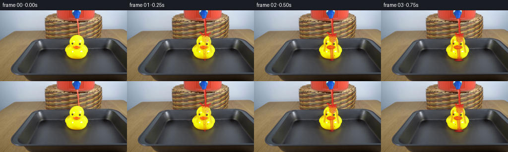

CODING AGENTS AS PIXEL WORLD MODELS
traex/DeepSeek-V4.1-Flash · 0086
点击播放 · 原生 RGB 像素
逐轮保存的候选
回放视频、检查图与代码变化。
每份候选均可单独播放。实际图片检查记录在下方工具轨迹中。
候选 01播放与检查图
点击播放 · 原生 RGB 像素


展开代码变化
--- 上一保存版本
+++ 本次保存版本
@@ -0,0 +1,317 @@
+from pathlib import Path
+
+import cv2
+import numpy as np
+from PIL import Image
+
+import artifact_io
+
+
+ROOT = Path(__file__).resolve().parent
+H, W = 144, 256
+N = 20
+FPS = 4.0
+
+
+def smoothstep(edge0, edge1, value):
+ value = np.clip((value - edge0) / (edge1 - edge0), 0.0, 1.0)
+ return value * value * (3.0 - 2.0 * value)
+
+
+def composite(base, mask, color, opacity=1.0):
+ alpha = np.clip(mask * opacity, 0.0, 1.0)[..., None]
+ color = np.asarray(color, dtype=np.float32)
+ if color.ndim == 1:
+ color = color.reshape(1, 1, 3)
+ return base * (1.0 - alpha) + color * alpha
+
+
+def ellipse_alpha(xx, yy, cx, cy, rx, ry, softness=1.0):
+ distance = np.sqrt(((xx - cx) / rx) ** 2 + ((yy - cy) / ry) ** 2)
+ return np.clip((1.0 - distance) * min(rx, ry) / softness + 0.5, 0.0, 1.0)
+
+
+def capsule_alpha(xx, yy, x1, y1, x2, y2, radius, softness=1.0):
+ vx, vy = x2 - x1, y2 - y1
+ denominator = vx * vx + vy * vy
+ if denominator < 1e-6:
+ distance = np.sqrt((xx - x1) ** 2 + (yy - y1) ** 2)
+ else:
+ projection = np.clip(((xx - x1) * vx + (yy - y1) * vy) / denominator, 0.0, 1.0)
+ px = x1 + projection * vx
+ py = y1 + projection * vy
+ distance = np.sqrt((xx - px) ** 2 + (yy - py) ** 2)
+ return np.clip((radius + softness * 0.55 - distance) / softness + 0.5, 0.0, 1.0)
+
+
+def duck_surface(base):
+ hsv = cv2.cvtColor(base.astype(np.uint8), cv2.COLOR_RGB2HSV)
+ hue, saturation, value = (hsv[:, :, i].astype(np.float32) for i in range(3))
+ yy, xx = np.mgrid[0:H, 0:W]
+ mask = (
+ (yy >= 47)
+ & (yy <= 103)
+ & (xx >= 120)
+ & (xx <= 188)
+ & (hue >= 20)
+ & (hue <= 42)
+ & (saturation > 95)
+ & (value > 105)
+ ).astype(np.uint8)
+ mask = cv2.morphologyEx(mask, cv2.MORPH_CLOSE, np.ones((3, 3), np.uint8))
+ mask = cv2.dilate(mask, np.ones((3, 3), np.uint8), iterations=1)
+ return cv2.GaussianBlur(mask.astype(np.float32), (0, 0), 0.7)
+
+
+def stream_layer(base, t, xx, yy):
+ ys = np.arange(15.0, 54.0)
+ center = (
+ 157.7
+ + 0.55 * np.sin(0.54 * ys + 2.5 * t)
+ + 0.28 * np.sin(0.19 * ys - 3.0 * t + 0.8)
+ )
+ bead_phase = (t * 34.0 + 6.0) % 31.0
+ width = (
+ 2.05
+ + 0.25 * np.sin(0.33 * ys + 1.3 * t)
+ + 0.62 * np.exp(-((ys - (15.0 + bead_phase)) / 2.2) ** 2)
+ )
+ x_centers = np.interp(yy, ys, center)
+ x_widths = np.interp(yy, ys, width)
+ horizontal = np.abs(xx - x_centers) / np.maximum(x_widths, 0.2)
+ vertical = smoothstep(14.5, 17.0, yy) * (1.0 - smoothstep(51.5, 54.2, yy))
+ mask = np.clip((1.25 - horizontal) * 0.9, 0.0, 1.0) * vertical
+ mask = cv2.GaussianBlur(mask.astype(np.float32), (0, 0), 0.45)
+
+ offset = np.clip((xx - x_centers) / np.maximum(x_widths, 0.2), -1.2, 1.2)
+ highlight = np.exp(-((offset + 0.43) / 0.28) ** 2)
+ shade = np.clip(np.abs(offset) - 0.42, 0.0, 1.0)
+ color = np.empty((H, W, 3), dtype=np.float32)
+ color[..., 0] = 210.0 + 38.0 * highlight - 46.0 * shade
+ color[..., 1] = 31.0 + 58.0 * highlight - 13.0 * shade
+ color[..., 2] = 25.0 + 42.0 * highlight - 8.0 * shade
+ return mask, color
+
+
+def wet_duck_layer(t, xx, yy, duck):
+ impact_x = 157.5 + 0.55 * np.sin(1.8 * t)
+ growth = smoothstep(0.02, 0.52, t)
+
+ center_path = (
+ 157.2
+ + 0.65 * np.sin(0.10 * (yy - 50.0) + 1.9 * t)
+ + 0.018 * np.maximum(yy - 65.0, 0.0)
+ )
+ path_width = 1.9 + 2.9 * smoothstep(53.0, 96.0, yy)
+ main_path = np.clip(1.0 - np.abs(xx - center_path) / path_width, 0.0, 1.0)
+ main_path *= smoothstep(49.0, 52.0, yy) * (1.0 - smoothstep(96.0, 101.0, yy))
+
+ crown = ellipse_alpha(xx, yy, impact_x, 51.4, 7.8 + 1.2 * growth, 4.0, 1.1)
+ forehead = ellipse_alpha(xx, yy, impact_x, 57.2, 7.2, 8.2, 1.3)
+ beak_pool = ellipse_alpha(xx, yy, 154.8, 74.5, 9.0, 4.4, 1.0)
+ left_runoff = capsule_alpha(
+ xx, yy, 145.2, 60.0, 141.0 + 0.4 * np.sin(2.0 * t), 82.0, 1.35, 1.0
+ )
+ right_runoff = capsule_alpha(
+ xx, yy, 165.0, 59.0, 169.5 + 0.35 * np.sin(2.3 * t + 1.0), 84.0, 1.25, 1.0
+ )
+ belly_drip = capsule_alpha(
+ xx,
+ yy,
+ 153.2 + 0.8 * np.sin(1.4 * t),
+ 76.0,
+ 156.0 + 1.0 * np.sin(1.4 * t + 0.7),
+ 99.0,
+ 1.65,
+ 1.1,
+ )
+
+ wet = np.maximum.reduce(
+ [
+ main_path * 0.92,
+ crown * 0.95,
+ forehead * 0.72,
+ beak_pool * 0.78,
+ left_runoff * 0.44,
+ right_runoff * 0.42,
+ belly_drip * 0.70,
+ ]
+ )
+ wet *= duck * growth
+
+ highlight = np.exp(-((xx - center_path + 1.25) / 1.1) ** 2)
+ highlight *= main_path * duck * growth
+ color = np.empty((H, W, 3), dtype=np.float32)
+ color[..., 0] = 214.0 + 34.0 * highlight
+ color[..., 1] = 35.0 + 55.0 * highlight
+ color[..., 2] = 28.0 + 40.0 * highlight
+ return wet, color
+
+
+def puddle_layer(t, xx, yy):
+ growth = smoothstep(0.22, 1.75, t)
+ if growth <= 0.0:
+ return np.zeros((H, W), dtype=np.float32), np.zeros((H, W, 3), dtype=np.float32)
+
+ cx = 156.0 + 1.0 * np.sin(0.65 * t)
+ cy = 100.5 + 0.25 * np.sin(1.3 * t)
+ rx = 3.0 + 23.5 * growth
+ ry = 1.1 + 5.2 * growth
+ dx = (xx - cx) / rx
+ dy = (yy - cy) / ry
+ theta = np.arctan2(dy, dx)
+ ripple = 0.045 * np.sin(7.0 * theta + 1.4 * t) + 0.026 * np.sin(13.0 * theta - 2.1 * t)
+ field = np.sqrt(dx * dx + dy * dy) + ripple
+ mask = np.clip((1.0 - field) * min(rx, ry) / 0.9 + 0.5, 0.0, 1.0)
+ mask *= (yy >= 98.5) * (yy <= 110.5)
+ mask = cv2.GaussianBlur(mask.astype(np.float32), (0, 0), 0.55)
+
+ depth = np.clip(1.0 - field, 0.0, 1.0)
+ sheen = np.exp(-((yy - (cy - ry * 0.22)) / 1.0) ** 2)
+ sheen *= np.exp(-((xx - (cx + 3.5 * np.sin(1.5 * t))) / (rx * 0.52)) ** 2)
+ edge = np.clip(1.0 - depth * 2.4, 0.0, 1.0)
+ color = np.empty((H, W, 3), dtype=np.float32)
+ color[..., 0] = 128.0 + 76.0 * depth + 56.0 * sheen - 42.0 * edge
+ color[..., 1] = 14.0 + 22.0 * depth + 37.0 * sheen - 5.0 * edge
+ color[..., 2] = 14.0 + 18.0 * depth + 28.0 * sheen - 4.0 * edge
+ return mask, color
+
+
+def draw_impact(base, t, xx, yy):
+ impact_x = 157.5 + 0.55 * np.sin(1.8 * t)
+ frame = base.copy()
+
+ # A tight, pulsing crown and two curling side jets make the impact readable.
+ pulse = 0.5 + 0.5 * np.sin(5.2 * t)
+ crown_radius = 5.0 + 1.7 * pulse
+ radial = np.sqrt((xx - impact_x) ** 2 + ((yy - 51.0) * 1.35) ** 2)
+ ring = np.exp(-((radial - crown_radius) / 0.65) ** 2)
+ ring *= (yy < 54.0)
+ frame = composite(frame, ring, (242.0, 72.0, 55.0), 0.55)
+
+ for sign, phase in ((-1.0, 0.0), (1.0, 1.6)):
+ wave = 0.5 + 0.5 * np.sin(4.7 * t + phase)
+ x1 = impact_x + sign * (2.0 + 1.5 * wave)
+ y1 = 50.2
+ x2 = impact_x + sign * (6.5 + 4.5 * wave)
+ y2 = 47.5 - 3.2 * wave
+ jet = capsule_alpha(xx, yy, x1, y1, x2, y2, 0.9, 0.85)
+ frame = composite(frame, jet, (226.0, 43.0, 34.0), 0.82)
+
+ # Fine airborne beads keep the splash from looking like a painted outline.
+ for j in range(-2, 3):
+ angle = j * 0.62 + 0.3 * np.sin(3.3 * t)
+ age = 0.16 + 0.08 * (0.5 + 0.5 * np.sin(5.1 * t + j))
+ speed = 31.0 + 8.0 * np.cos(j * 1.7)
+ px = impact_x + np.cos(angle) * speed * age
+ py = 50.5 + np.sin(angle) * speed * age + 115.0 * age * age
+ radius = 0.55 + 0.18 * (j % 2)
+ bead = ellipse_alpha(xx, yy, px, py, radius * 1.2, radius, 0.7)
+ frame = composite(frame, bead, (239.0, 58.0, 42.0), 0.76)
+ return frame
+
+
+def draw_droplets(frame, t, xx, yy):
+ impact_x = 157.5 + 0.4 * np.sin(1.8 * t)
+ interval = 0.085
+ newest = int(np.floor(t / interval))
+ for index in range(max(0, newest - 10), newest + 1):
+ rng = np.random.default_rng(9182 + index)
+ spawn = index * interval
+ age = t - spawn
+ if age < 0.0:
+ continue
+ life = rng.uniform(0.30, 0.63)
+ if age > life:
+ continue
+
+ angle = rng.uniform(-2.85, -0.29)
+ speed = rng.uniform(25.0, 69.0)
+ vx = np.cos(angle) * speed
+ vy = np.sin(angle) * speed + rng.uniform(-2.0, 6.0)
+ gravity = 185.0
+ x = impact_x + rng.uniform(-1.2, 1.2) + vx * age
+ y = 50.5 + vy * age + 0.5 * gravity * age * age
+ if x < 125.0 or x > 188.0 or y > 105.0:
+ continue
+
+ previous_x = x - vx / FPS
+ previous_y = y - (vy + gravity * age) / FPS
+ radius = rng.uniform(0.42, 0.95) * (1.0 - 0.35 * age / life)
+ fade = (1.0 - age / life) ** 0.5
+
+ trail = capsule_alpha(xx, yy, previous_x, previous_y, x, y, radius * 0.55, 0.75)
+ frame = composite(frame, trail, (211.0, 28.0, 25.0), 0.28 * fade)
+ bead = ellipse_alpha(xx, yy, x, y, radius * 1.15, radius, 0.75)
+ highlight = ellipse_alpha(
+ xx, yy, x - radius * 0.28, y - radius * 0.30, radius * 0.42, radius * 0.34, 0.55
+ )
+ frame = composite(frame, bead, (222.0, 39.0, 31.0), 0.80 * fade)
+ frame = composite(frame, highlight, (255.0, 132.0, 110.0), 0.54 * fade)
+ return frame
+
+
+def draw_hanging_drips(frame, t, xx, yy):
+ for index, (base_x, phase, top, bottom) in enumerate(
+ [(150.0, 0.0, 75.0, 98.0), (161.5, 1.4, 73.0, 97.0), (155.0, 2.3, 77.0, 100.0)]
+ ):
+ cycle = (t * 0.72 + phase) % 1.0
+ y = top + cycle * (bottom - top)
+ x = base_x + 0.45 * np.sin(4.5 * t + index)
+ radius = 0.65 + 0.35 * smoothstep(0.55, 1.0, cycle)
+ drip = ellipse_alpha(xx, yy, x, y, radius * 0.82, radius * 1.35, 0.75)
+ frame = composite(frame, drip, (218.0, 35.0, 29.0), 0.72)
+ glint = ellipse_alpha(
+ xx, yy, x - radius * 0.22, y - radius * 0.38, radius * 0.25, radius * 0.35, 0.45
+ )
+ frame = composite(frame, glint, (255.0, 126.0, 104.0), 0.45)
+ return frame
+
+
+def generate_frames():
+ first = np.asarray(Image.open(ROOT / "first_frame.png").convert("RGB"), dtype=np.uint8)
+ assert first.shape == (H, W, 3)
+ base = first.astype(np.float32)
+ yy, xx = np.mgrid[0:H, 0:W].astype(np.float32)
+ duck = duck_surface(first)
+
+ frames = []
+ for index in range(N):
+ t = index / FPS
+ frame = base.copy()
+
+ stream_mask, stream_color = stream_layer(base, t, xx, yy)
+ frame = composite(frame, stream_mask, stream_color, 0.94)
+
+ wet_mask, wet_color = wet_duck_layer(t, xx, yy, duck)
+ frame = composite(frame, wet_mask, wet_color, 0.72)
+
+ puddle_mask, puddle_color = puddle_layer(t, xx, yy)
+ frame = composite(frame, puddle_mask, puddle_color, 0.83)
+
+ frame = draw_impact(frame, t, xx, yy)
+ frame = draw_droplets(frame, t, xx, yy)
+ frame = draw_hanging_drips(frame, t, xx, yy)
+
+ # Preserve the photographic grain instead of leaving synthetic areas flat.
+ rng = np.random.default_rng(4100 + index)
+ grain = rng.normal(0.0, 1.25, (H, W, 1)).astype(np.float32)
+ affected = np.clip(
+ np.maximum.reduce([stream_mask, wet_mask, puddle_mask]) * 1.6, 0.0, 1.0
+ )[..., None]
+ frame += grain * affected
+
+ frames.append(np.clip(frame, 0, 255).astype(np.uint8))
+
+ frames[0] = first.copy()
+ assert np.array_equal(frames[0], first)
+ return np.stack(frames)
+
+
+def main():
+ frames = generate_frames()
+ artifact_io.save(frames, ROOT)
+
+
+if __name__ == "__main__":
+ main()
可观测工具轨迹
实际执行的命令与返回图片。
命令 1exit 0
/bin/bash -c "pwd && rg --files -g 'prompt.txt' -g 'GENERATION_RULES.md' -g 'first_frame.png' -g '"'!*.mp4'"'"
命令 2exit 0
/bin/bash -c 'git status --short && ls -la'
命令 3exit 0
/bin/bash -c 'cat prompt.txt'
命令 4exit 0
/bin/bash -c 'cat GENERATION_RULES.md'
命令 5exit 0
/bin/bash -c "sed -n '1,260p' artifact_io.py && sed -n '1,220p' player_template.html"
命令 6exit 0
/bin/bash -c 'file first_frame.png && identify first_frame.png 2>/dev/null || true'
命令 7exit 0
/bin/bash -c "python - <<'PY'
from PIL import Image
import numpy as np
im=np.asarray(Image.open('first_frame.png').convert('RGB'))
print(im.shape, im.dtype)
print('mean', im.reshape(-1,3).mean(0), 'std', im.reshape(-1,3).std(0))
# sample grid RGB and luminance chars
h,w,_=im.shape
for y in range(4,h,8):
line=[]
for x in range(4,w,8):
r,g,b=im[y,x]
lum=.2126*r+.7152*g+.0722*b
chars=' .:-=+*#%@'
line.append(chars[min(9,int(lum/256*10))])
print(''.join(line))
PY"命令 8exit 0
/bin/bash -c "python - <<'PY'
from PIL import Image
import numpy as np
im=np.asarray(Image.open('first_frame.png').convert('RGB'))
# dump quantized color palette
q=(im//32)*32
cols,cnt=np.unique(q.reshape(-1,3),axis=0,return_counts=True)
for c,n in sorted(zip(cols.tolist(),cnt.tolist()),key=lambda z:-z[1])[:30]:print(n,c)
# selected x scans
for y in [10,20,30,40,50,60,70,80,90,100,110,120,130,140]:
print('y',y, [(x, tuple(im[y,x])) for x in range(0,256,16)])
PY"命令 9exit 0
/bin/bash -c "python - <<'PY'
try:
import cv2; print('cv2',cv2.__version__)
except Exception as e: print('no cv2',e)
try:
import scipy; print('scipy',scipy.__version__)
except Exception as e: print('no scipy',e)
try:
import imageio; print('imageio',imageio.__version__)
except Exception as e: print('no imageio',e)
PY"命令 10exit 0
/bin/bash -c "python - <<'PY'
from PIL import Image
import numpy as np
im=np.asarray(Image.open('first_frame.png').convert('RGB')).astype(int)
# print semantic map using simple color categories
r,g,b=im.transpose(2,0,1)
cats=np.zeros(r.shape,dtype=np.uint8)
cats[(r>180)&(g>180)&(b<100)]=1 # yellow
cats[(r>110)&(r>g*1.4)&(r>b*1.4)]=2 # red
cats[(r<130)&(g<130)&(b<130)&(abs(r-g)<12)&(abs(g-b)<15)]=3 # dark gray
cats[(r>r.max()*0+120)&(g<145)&(b<120)&(r>g+15)]=4 # tan
chars=' .YRDT'
for y in range(0,144,3):
print(''.join(chars[cats[y,x]] for x in range(0,256,4)))
PY"命令 11exit 0
/bin/bash -c "python - <<'PY'
from PIL import Image
import numpy as np, cv2
im=np.asarray(Image.open('first_frame.png').convert('RGB'))
r,g,b=im.transpose(2,0,1).astype(int)
masks={
'yellow':(r>170)&(g>170)&(b<110)&(r-g<90),
'red':(r>100)&(r>g*1.45)&(r>b*1.45)&(g<140),
'cyan_glass':(b>r+10)&(g>r+3)&(r>80),
'brown':(r>g+8)&(g>b+5)&(r>75),
'dark':(r<100)&(g<100)&(b<100)&(np.maximum.reduce([r,g,b])-np.minimum.reduce([r,g,b])<20),
'lightgray':(r>140)&(g>140)&(b>140)&(np.maximum.reduce([r,g,b])-np.minimum.reduce([r,g,b])<25),
}
for name,m in masks.items():
ys,xs=np.where(m)
print('\\n',name,'count',m.sum(),'bbox', (xs.min(),ys.min(),xs.max(),ys.max()) if len(xs) else None)
print(' y counts',[(y,int(m[y].sum())) for y in range(0,144,8)])
# components
n,lab,stats,cent=cv2.connectedComponentsWithStats(m.astype(np.uint8),8)
comps=sorted(stats[1:].tolist(), key=lambda s:-s[4])[:8]
print(' comps',comps)
PY"命令 12exit 0
/bin/bash -c "python - <<'PY'
from PIL import Image
import numpy as np
im=np.asarray(Image.open('first_frame.png').convert('RGB')).astype(float)
chars=' .,:;irsXA253hMHGS#9B&@'
for y in range(0,104,2):
line=''
for x in range(80,216,2):
r,g,b=im[y:y+2,x:x+2].mean((0,1)); lum=.2126*r+.7152*g+.0722*b
# sat/color focus chars
if r>g*1.25 and r>b*1.3 and r>90: c='R'
elif r>160 and g>160 and b<100: c='Y'
elif b>r+8 and g>r-2 and r>70: c='C'
else: c=chars[min(len(chars)-1,int(lum/256*len(chars)))]
line+=c
print(f'{y:03d} '+line)
PY"命令 13exit 0
/bin/bash -c "python - <<'PY'
from PIL import Image
import numpy as np
im=np.asarray(Image.open('first_frame.png').convert('RGB')).astype(int)
# sample exact region rows, runs classified yellow/red/non
for y in [20,25,30,35,40,45,50,52,54,56,58,60,62,64,66,68,70,72,74,76,78,80,84,88,92,96,98]:
runs=[]; last=None; start=None
for x in range(80,216):
r,g,b=im[y,x]
c='Y' if (r>160 and g>160 and b<100) else ('R' if (r>100 and r>g*1.45 and r>b*1.45) else 'o')
if c"'!=last:
if last is not None:runs.append((last,start,x-1))
last=c;start=x
runs.append((last,start,215))
print(y,[z for z in runs if z[0]!='"'o' or z[2]-z[1]>4])
PY"命令 14exit 0
/bin/bash -c "python - <<'PY'
from PIL import Image
import numpy as np, cv2
im=np.asarray(Image.open('first_frame.png').convert('RGB'))
r,g,b=im.transpose(2,0,1).astype(int)
# color channel normalized RGB classify by hue
import colorsys
# make enlarged nearest first frame and a few horizontal crops as inspect candidates
Image.fromarray(im).resize((1024,576),Image.Resampling.NEAREST).save('.tmp/first4x.png')
Image.fromarray(im[0:110,80:216]).resize((816,660),Image.Resampling.NEAREST).save('.tmp/top6x.png')
# brightness edge / saturation views
hsv=cv2.cvtColor(im,cv2.COLOR_RGB2HSV)
Image.fromarray(hsv[:,:,1]).save('.tmp/sat.png')
Image.fromarray(hsv[:,:,0]).save('.tmp/hue.png')
print('saved')
# red pixels stats in upper dispenser area per y
for y in range(0,105,4):
m=(r[y]>90)&(r[y]>g[y]*1.45)&(r[y]>b[y]*1.45)
xs=np.where(m)[0]
if len(xs):print(y, len(xs), xs.min(), xs.max())
PY"命令 15exit 0
/bin/bash -c "python - <<'PY'
from PIL import Image
import numpy as np, cv2
im=np.asarray(Image.open('first_frame.png').convert('RGB'))
g=cv2.cvtColor(im,cv2.COLOR_RGB2GRAY)
# edge ascii crop 60:216 x 0:110 step 2
ed=cv2.Canny(im,60,120)
chars=' .:-=+*#%@'
for y in range(0,112,2):
line=''
for x in range(60,216,2):
v=ed[y:y+2,x:x+2].mean()
line+=chars[min(9,int(v/255*25))]
print(f'{y:03d} '+line)
PY"命令 16exit 0
/bin/bash -c "python - <<'PY'
from PIL import Image
import numpy as np
im=np.asarray(Image.open('first_frame.png').convert('RGB')).astype(int)
# print local crops with quantized luminance 120:220, 50:110
chars=' .,:;irsXA253hMHGS#9B&@'
for y in range(45,111):
line=''
for x in range(120,205):
r,g,b=im[y,x]
lum=.2126*r+.7152*g+.0722*b
# hue chars
if r>g*1.25 and r>b*1.3 and r>85: c='R'
elif r>160 and g>160 and b<110: c='Y'
elif b>r+8 and g>r-2 and r>70: c='C'
else:c=chars[min(len(chars)-1,int(lum/256*len(chars)))]
line+=c
print(f'{y:03d} '+line)
PY"命令 17exit 0
/bin/bash -c "python - <<'PY'
from PIL import Image
import numpy as np
im=np.asarray(Image.open('first_frame.png').convert('RGB')).astype(int)
# for rows 0-60, identify likely red liquid edges and cyan glass; color means in blocks
for y in range(0,61,4):
print('\\ny',y)
for x in range(96,208,8):
a=im[y:y+4,x:x+8].mean((0,1)).astype(int)
print(f'{x}:{a[0]},{a[1]},{a[2]}',end=' ')
print()
PY"命令 18exit 0
/bin/bash -c "python - <<'PY'
from PIL import Image
import numpy as np
im=np.asarray(Image.open('first_frame.png').convert('RGB'))
# render crop rows 0:60 as ANSI-ish html? Instead save several channel crops
for name,arr in [('red',im[:,:,0]),('green',im[:,:,1]),('blue',im[:,:,2])]: Image.fromarray(arr).save('.tmp/'+name+'.png')
Image.fromarray(im[0:65,90:210]).resize((960,520),Image.Resampling.NEAREST).save('.tmp/disp8x.png')
Image.fromarray(im[45:105,120:190]).resize((700,600),Image.Resampling.NEAREST).save('.tmp/duck10x.png')
print('ok')
PY"命令 19exit 0
/bin/bash -c "python - <<'PY'
from PIL import Image
import numpy as np, cv2
im=np.asarray(Image.open('first_frame.png').convert('RGB')).astype(np.float32)
# optical-ish smooth displacement for water; use gradient derivatives
# print mask extents using red liquid hue in hsv, dispenser crop
hsv=cv2.cvtColor(im.astype(np.uint8),cv2.COLOR_RGB2HSV)
h,s,v=[hsv[:,:,i].astype(int) for i in range(3)]
# inspect hue/sat at points around stream
for y in [58,60,62,64,66,68,70,72,74,76,78,80,82,84,86,88,90,92,94,96]:
arr=[]
for x in range(125,185):
if s[y,x]>100 and v[y,x]>60:
arr.append((x,int(h[y,x]),int(s[y,x]),int(v[y,x])))
print(y, arr[:10], '...n',len(arr))
PY"命令 20exit 0
/bin/bash -c "python - <<'PY'
from PIL import Image
import numpy as np
im=np.asarray(Image.open('first_frame.png').convert('RGB')).astype(int)
# rows 64-100, color values at x every 4 around stream, print classify hue plus means per row
for y in range(64,101,2):
xs=[]
for x in range(125,190,4):
r,g,b=im[y,x]
if r>g*1.25 and r>b*1.3 and r>80: c='R'
elif r>150 and g>150 and b<110: c='Y'
elif b>r+8: c='C'
else: c='.'
xs.append(c)
print(y,''.join(xs))
# per-row count categories
for y in range(64,101):
r,g,b=im[y,125:190].T
red=((r>80)&(r>g*1.25)&(r>b*1.3)).sum()
yellow=((r>150)&(g>150)&(b<110)).sum()
print(y, 'red',red,'yellow',yellow)
PY"命令 21exit 0
/bin/bash -c "python - <<'PY'
from PIL import Image
import numpy as np
im=np.asarray(Image.open('first_frame.png').convert('RGB')).astype(int)
# masks approximate geometry for dispenser: glass edges and red fill
# print row extents of yellow with stricter / region, and red in duck body
for y in range(50,101,2):
row=im[y]
r,g,b=row.T
yellow=(r>150)&(g>150)&(b<120)&(r-g<100)
xs=np.where(yellow)[0]
if len(xs): print('Y',y,xs.min(),xs.max(),len(xs))
PY"命令 22exit 0
/bin/bash -c "python - <<'PY'
from PIL import Image
import numpy as np, cv2
im=np.asarray(Image.open('first_frame.png').convert('RGB'))
hsv=cv2.cvtColor(im,cv2.COLOR_RGB2HSV)
h,s,v=hsv[:,:,0].astype(int),hsv[:,:,1].astype(int),hsv[:,:,2].astype(int)
# hue categories for 80:215 x 0:65, downsample 2x2 blocks
for y in range(0,66,2):
line=''
for x in range(80,216,2):
H=np.median(h[y:y+2,x:x+2]); S=np.mean(s[y:y+2,x:x+2]); V=np.mean(v[y:y+2,x:x+2])
if V<35: c='K'
elif S<35: c='.'
elif H<8 or H>=170: c='R'
elif H<22: c='o'
elif H<38: c='Y'
elif H<75: c='G'
elif H<105: c='C'
elif H<135: c='B'
elif H<170: c='M'
else:c='?'
line+=c
print(f'{y:02d} {line}')
PY"命令 23exit 0
/bin/bash -c "python - <<'PY'
from PIL import Image
import numpy as np, cv2
im=np.asarray(Image.open('first_frame.png').convert('RGB'))
hsv=cv2.cvtColor(im,cv2.COLOR_RGB2HSV)
# print color stats and bounding boxes for HSV masks broad
H,S,V=[hsv[:,:,i].astype(int) for i in range(3)]
def bbox(mask,name):
ys,xs=np.where(mask)
print(name, 'count',len(xs),'bbox', (xs.min(),ys.min(),xs.max(),ys.max()) if len(xs) else None)
# masks
bbox((H<8)|(H>170),'red hue')
bbox((H>=8)&(H<22)&(S>100),'orange hue')
bbox((H>=22)&(H<38)&(S>120),'yellow hue')
bbox((H>=38)&(H<75)&(S>40),'green hue')
bbox((H>=75)&(H<105)&(S>35),'cyan hue')
bbox((H>=105)&(H<135)&(S>40),'blue hue')
bbox((H>=135)&(H<170)&(S>40),'magenta hue')
bbox((S<25)&(V>100),'white/light gray')
bbox((S<35)&(V<80),'dark gray')
# print vertical/horizontal occupancy of hue categories at 4-pixel bins
for name,m in [('R',(H<8)|(H>170)),('O',(H>=8)&(H<22)&(S>100)),('Y',(H>=22)&(H<38)&(S>120)),('C',(H>=75)&(H<105)&(S>35))]:
print('\\n',name,'row counts')
for y in range(0,144,4):
print(y,int(m[y:y+4].sum()),end='; ')
print()
PY"命令 24exit 0
/bin/bash -c "python - <<'PY'
from PIL import Image
import numpy as np
im=np.asarray(Image.open('first_frame.png').convert('RGB')).astype(int)
# list exact rows with yellow mask positions, connected extent and edges for top of duck
for y in range(48,102,2):
r,g,b=im[y].T
m=(r>170)&(g>170)&(b<115)
xs=np.where(m)[0]
print(y, (xs.min(),xs.max(),len(xs)) if len(xs) else None)
PY"命令 25exit 0
/bin/bash -c "python - <<'PY'
from PIL import Image
import numpy as np
im=np.asarray(Image.open('first_frame.png').convert('RGB')).astype(int)
# print pixel grid 120:190, 64:102 with dominant categories at full res but only chars
for y in range(64,103):
line=''
for x in range(125,185):
r,g,b=im[y,x]
if r>g*1.25 and r>b*1.3 and r>80: c='R'
elif r>150 and g>150 and b<110:c='Y'
elif b>r+8:c='C'
elif r+g+b<180:c='K'
else:c='.'
line+=c
print(f'{y:03d} {line}')
PY"命令 26exit 0
/bin/bash -c "python - <<'PY'
from PIL import Image
import numpy as np
im=np.asarray(Image.open('first_frame.png').convert('RGB')).astype(int)
# inspect colors at candidate stream points
for y in range(55,72):
print('row',y, [(x,tuple(im[y,x])) for x in range(138,157,2)])
PY"命令 27exit 0
/bin/bash -c "python - <<'PY'
from PIL import Image
import numpy as np
im=np.asarray(Image.open('first_frame.png').convert('RGB')).astype(int)
# detailed around spout and red stream at x 130:180, y 45:72 with RGB chars
# quantize to hue names but show intensity levels
for y in range(45,73):
line=''
for x in range(125,190):
r,g,b=im[y,x]
if r>g*1.45 and r>b*1.45 and r>90:
c='R'
elif r>g*1.12 and g>b*1.5 and r>100:
c='r'
elif r>180 and g>180 and b<120:
c='Y'
elif b>r+15:
c='C'
elif (r+g+b)<180: c='K'
else: c='.'
line+=c
print(f'{y:03d} {line}')
PY"命令 28exit 0
/bin/bash -c "python - <<'PY'
from PIL import Image
import numpy as np
im=np.asarray(Image.open('first_frame.png').convert('RGB')).astype(int)
# look at candidate spout: red region 110-200 x 0-58, row runs of red exact
for y in range(0,60):
r,g,b=im[y].T
m=(r>100)&(r>g*1.5)&(r>b*1.5)
xs=np.where(m)[0]
# only if upper region
xs=xs[(xs>=90)&(xs<=210)]
if len(xs):
# runs
runs=[]; s=xs[0]; p=xs[0]
for x in xs[1:]:
if x>p+1:runs.append((s,p));s=x
p=x
runs.append((s,p))
print(y,runs)
PY"命令 29exit 0
/bin/bash -c "python - <<'PY'
from PIL import Image
import numpy as np
im=np.asarray(Image.open('first_frame.png').convert('RGB')).astype(float)
# make column colored ascii for center x=147 and x=158 with RGB
for x in [140,142,144,146,148,150,152,154,156,158,160]:
print('x',x)
for y in range(40,61):
print(y,tuple(im[y,x].astype(int)),end=' | ')
print('\\n')
PY"命令 30exit 0
/bin/bash -c "python - <<'PY'
from PIL import Image
import numpy as np
im=np.asarray(Image.open('first_frame.png').convert('RGB')).astype(int)
# test candidate masks for stream: all red-ish pixels not in top reservoir, print coords ranges per row
for y in range(54,75):
vals=[]
for x in range(130,180):
r,g,b=im[y,x]
# red liquid: high R, low G, low B, not orange/brown
if r>150 and g<120 and b<110 and r>g+70:
vals.append(x)
if vals: print(y,min(vals),max(vals),len(vals),vals)
PY"命令 31exit 0
/bin/bash -c "python - <<'PY'
from PIL import Image
import numpy as np
im=np.asarray(Image.open('first_frame.png').convert('RGB')).astype(int)
for y in range(40,72):
vals=[]
for x in range(120,190):
r,g,b=im[y,x]
if r>140 and r>g*1.4 and r>b*1.4 and g<160:
vals.append(x)
if vals: print(y,min(vals),max(vals),len(vals),vals)
PY"命令 32exit 0
/bin/bash -c "python - <<'PY'
from PIL import Image
import numpy as np
im=np.asarray(Image.open('first_frame.png').convert('RGB')).astype(int)
for x in range(150,166):
print('\\nx',x)
for y in range(18,53):
print(y, tuple(im[y,x]), end='; ')
print()
PY"命令 33exit 0
/bin/bash -c 'python generate.py'
命令 34exit 0
/bin/bash -c "python - <<'PY'
from PIL import Image
import numpy as np
im=np.asarray(Image.open('inspection.png'))
print('inspection',im.shape)
# report frame differences / affected bbox / means
for i in range(20):
a=np.asarray(Image.open(f'frames/{i:02d}.png')).astype(int)
if i==0: b=a.copy(); continue
d=np.abs(a-b).max(2)
ys,xs=np.where(d>4)
print(i, 'changed',len(xs),'bbox', (xs.min(),ys.min(),xs.max(),ys.max()) if len(xs) else None, 'mean',a.mean((0,1)).round(1))
PY"命令 35exit 0
/bin/bash -c "python - <<'PY'
from PIL import Image
import numpy as np
ims=[Image.open(f'frames/{i:02d}.png') for i in [0,1,4,8,12,16,19]]
# upscale montage 2x with labels
from PIL import ImageDraw
out=Image.new('RGB',(512*2,288*4+100),(20,20,20)); d=ImageDraw.Draw(out)
for k,im in enumerate(ims):
x=(k%2)*512; y=(k//2)*(288+20)+20
d.text((x+4,y-16),f'frame {[0,1,4,8,12,16,19][k]:02d}',fill='white')
out.paste(im.resize((512,288),Image.Resampling.NEAREST),(x,y))
out.save('.tmp/review.png')
# 4x crop of duck+stream all frames into horizontal sheet
out2=Image.new('RGB',(80*4*5,64*4*4),(20,20,20)); d=ImageDraw.Draw(out2)
for i in range(20):
im=Image.open(f'frames/{i:02d}.png').crop((120,40,200,104)).resize((320,256),Image.Resampling.NEAREST)
x=(i%5)*320; y=(i//5)*256
out2.paste(im,(x,y))
d.text((x+4,y+4),f'{i}',fill='white')
out2.save('.tmp/motion_grid.png')
PY"命令 36exit 0
/bin/bash -c "python - <<'PY'
from PIL import Image
import numpy as np
# summarize colored mask sizes and stream continuity over frames
for i in range(20):
im=np.asarray(Image.open(f'frames/{i:02d}.png')).astype(int)
r,g,b=im.transpose(2,0,1)
red=(r>130)&(r>g*1.55)&(r>b*1.55)
# counts in stream and puddle bands
print(i,'stream',int(red[15:55,135:180].sum()),'duck',int(red[45:100,120:190].sum()),'puddle',int(red[98:112,125:190].sum()))
PY"命令 37exit 0
/bin/bash -c "python - <<'PY'
from PIL import Image
import numpy as np
# dump final frame crop categories/values to inspect visual structure
im=np.asarray(Image.open('frames/12.png')).astype(int)
for y in range(10,112,2):
line=''
for x in range(120,196,2):
r,g,b=im[y:y+2,x:x+2].mean((0,1))
if r>g*1.35 and r>b*1.35 and r>100:c='R'
elif r>160 and g>160 and b<110:c='Y'
elif b>r+10:c='C'
elif r+g+b<180:c='K'
else:c='.'
line+=c
print(f'{y:03d} {line}')
PY"命令 38exit 0
/bin/bash -c "python - <<'PY'
from PIL import Image
import numpy as np
for f in [0,1,4,8,12,19]:
im=np.asarray(Image.open(f'frames/{f:02d}.png'))
# compare means in key regions to source
src=np.asarray(Image.open('first_frame.png'))
print(f,'top',im[0:10,120:180].mean((0,1)).round(1),'stream',im[20:48,150:166].mean((0,1)).round(1),'puddle',im[99:105,140:172].mean((0,1)).round(1))
PY"命令 39exit 0
/bin/bash -c "python - <<'PY'
from PIL import Image
import numpy as np
im=np.asarray(Image.open('first_frame.png')).astype(int)
# Print specific x rows around center to understand bottle geometry. crop ascii 90:210 y 0:60 at 1 px each, categories including dark vs brown
for y in range(0,60):
line=''
for x in range(90,211):
r,g,b=im[y,x]
if r>g*1.35 and r>b*1.35 and r>100:c='R'
elif r>150 and g>150 and b<110:c='Y'
elif b>r+15:c='C'
elif (r+g+b)<160:c='K'
elif r>g+15 and g>b+5:c='o'
else:c='.'
line+=c
print(f'{y:02d} {line}')
PY"命令 40exit 0
/bin/bash -c "python - <<'PY'
from PIL import Image
import numpy as np
im=np.asarray(Image.open('first_frame.png')).astype(int)
# Print x 145-180 y 15-60 colors as hex-ish compact and find bottle lower neck mask
for y in range(15,61,3):
print('y',y)
for x in range(145,181,3):print(f'{x}:{im[y,x,0]:03},{im[y,x,1]:03},{im[y,x,2]:03}',end=' ')
print()
PY"命令 41exit 0
/bin/bash -c "python - <<'PY'
from PIL import Image
import numpy as np
im=np.asarray(Image.open('first_frame.png')).astype(int)
# figure out spout: inspect x 150:170, y 0:25 labels and blue glass mask
for y in range(0,28):
print('y',y,[(x,tuple(im[y,x])) for x in range(148,172,2)])
PY"命令 42exit 0
/bin/bash -c 'ls -lh && find frames -maxdepth 1 -type f | sort | tail -5'
命令 43exit 1
/bin/bash -c "python - <<'PY'
import numpy as np
from PIL import Image
z=np.load('pixels.npz')['pixels']
print(z.shape,z.dtype,z.min(),z.max())
# decode and validate
p=z.astype(np.uint32)
frames=np.stack([(p[:,:,i]>>16).astype(np.uint8) for i in range(z.shape[2])],axis=-1)
first=np.asarray(Image.open('first_frame.png').convert('RGB'))
print('first exact',np.array_equal(frames[:,:,0],first))
# delta continuity and each frame bbox
prev=first
for i in range(1,20):
cur=frames[:,:,i]
print(i, 'd', int(np.abs(cur.astype(int)-prev.astype(int)).sum()), 'unique', len(np.unique(cur.reshape(-1,3),axis=0)))
prev=cur
PY"命令 44exit 1
/bin/bash -c "python - <<'PY'
import numpy as np
from PIL import Image
z=np.load('pixels.npz')['pixels'].astype(np.uint32)
frames=np.stack([(z>>16).astype(np.uint8),(z>>8&255).astype(np.uint8),(z&255).astype(np.uint8)],axis=0).transpose(1,2,3,0)
first=np.asarray(Image.open('first_frame.png').convert('RGB'))
print(frames.shape,'first exact',np.array_equal(frames[0],first))
prev=first
for i in range(1,20):
cur=frames[i]
print(i, 'changed',int((cur"'!=prev).any(2).sum()),'"'mean',cur.mean((0,1)).round(1))
prev=cur
PY"命令 45exit 1
/bin/bash -c "python - <<'PY'
import numpy as np
from PIL import Image
z=np.load('pixels.npz')['pixels'].astype(np.uint32)
frames=np.stack([(z>>16).astype(np.uint8),(z>>8&255).astype(np.uint8),(z&255).astype(np.uint8)],axis=0).transpose(2,0,1,3)
first=np.asarray(Image.open('first_frame.png').convert('RGB'))
print(frames.shape,'first exact',np.array_equal(frames[0],first))
prev=first
for i in range(1,20):
cur=frames[i]
print(i, 'changed',int((cur"'!=prev).any(2).sum()),'"'mean',cur.mean((0,1)).round(1))
prev=cur
PY"命令 46exit 0
/bin/bash -c "python - <<'PY'
import numpy as np
from PIL import Image
z=np.load('pixels.npz')['pixels'].astype(np.uint32)
r=(z>>16).astype(np.uint8); g=((z>>8)&255).astype(np.uint8); b=(z&255).astype(np.uint8)
frames=np.stack([r,g,b],axis=-1)
# z axes currently y,x,n -> frames y,x,n,c -> transpose to n,y,x,c
frames=frames.transpose(2,0,1,3)
first=np.asarray(Image.open('first_frame.png').convert('RGB'))
print(frames.shape,'first exact',np.array_equal(frames[0],first))
prev=first
for i in range(1,20):
cur=frames[i]
print(i, 'changed',int((cur"'!=prev).any(2).sum()),'"'mean',cur.mean((0,1)).round(1))
prev=cur
PY"命令 47exit 0
/bin/bash -c "python - <<'PY'
from PIL import Image
import numpy as np
# test crop coordinates / save x8 visual for possible second look
im=np.asarray(Image.open('frames/19.png'))
Image.fromarray(im[40:110,120:195]).resize((900,840),Image.Resampling.NEAREST).save('.tmp/final_duck12x.png')
# print per-frame red stream occupancy by y in 15:60 and puddle width
for i in [0,1,2,4,8,12,16,19]:
a=np.asarray(Image.open(f'frames/{i:02d}.png')).astype(int)
r,g,b=a.transpose(2,0,1)
m=(r>130)&(r>g*1.5)&(r>b*1.5)
print('frame',i)
for y in [15,20,25,30,35,40,45,50,55,60,70,80,90,100,105]:
xs=np.where(m[y])[0]
print(y, (xs.min(),xs.max(),len(xs)) if len(xs) else None,end='; ')
print()
PY"命令 48exit 0
/bin/bash -c "python - <<'PY'
from PIL import Image
import numpy as np
# build contact sheet at 4x nearest for duck, each row 5 frames
out=Image.new('RGB',(256*2,144*2*4),(18,18,18))
for i in range(20):
im=Image.open(f'frames/{i:02d}.png').crop((118,38,198,112)).resize((320,296),Image.Resampling.NEAREST)
x=(i%5)*320; y=(i//5)*296
out.paste(im,(x,y))
out.save('.tmp/duck_grid.png')
# create mp4 from frames for motion check if ffmpeg available
PY
ffmpeg -version | head -1"命令 49exit 0
/bin/bash -c "python - <<'PY'
from PIL import Image
import numpy as np
im=np.asarray(Image.open('first_frame.png')).astype(float)
# local crop statistics at possible spout x=156 vertical, compare RGB deviation across rows
for y in range(15,55):
px=im[y,156]
print(y,px.astype(int).tolist())
PY"保存候选 1 份；完成命令 49 次；可验证图片返回 0 张。原始 API 响应与完整日志保留在本地。